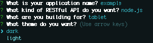

Make sure you have followed the instructions on the Installation page to install the dependencies and generators.
Generate a web app
cd [working directory]
mkdir [appFolder]
cd [appFolder]
yo
Prompts
Yeoman will walk you through each in the CLI. 
- Application name: Expects a string with no spaces
- RESTful API: Expects a list selection; options are node (javascript) or web.py (python)
- Build agent: Expects a list selection; options are desktop or tablet
- Theme: Expects a list selection; options are light or dark
Build complete
You should see a long list of files created with a final success message.

Serve app
If you built a node.js API, simply type into the CLI
node app.js
If you built a web.py API, simply type into the CLI
python app.py
Whether you chose a node.js or a web.py RESTful API, your front-end files will be available at 127.0.0.1:8000 and your API will be available at 127.0.0.1:8000/api/...
For example a default endpoint of 127.0.0.1:8000/api/data/app should resolve with metadata about the application.
Error when serving app
If you encounter the following error when serving the app
Error: Cannot find module 'express', install "express" locally.
sudo npm install express